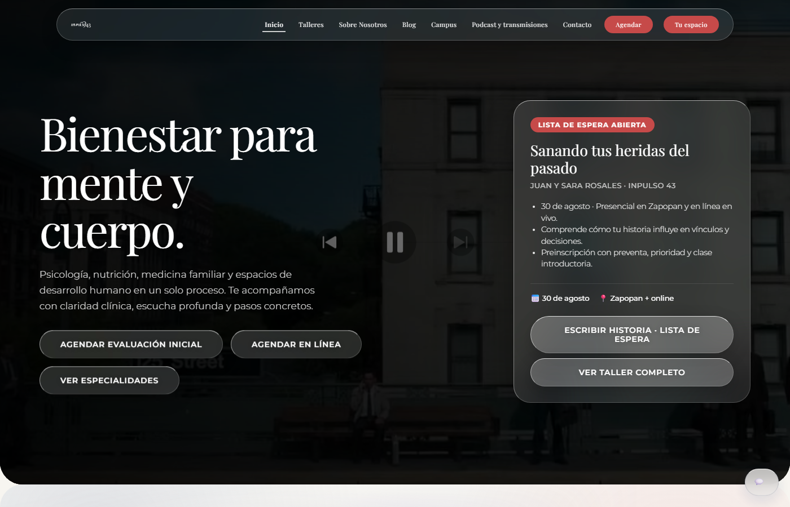
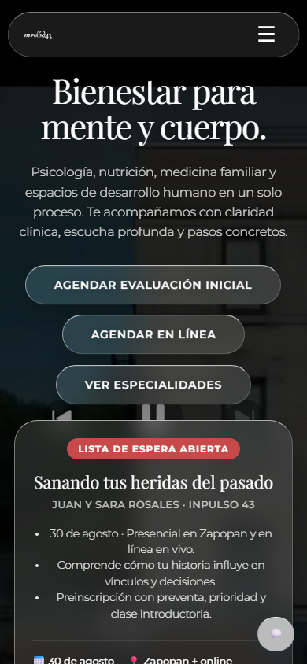

WhatsApp reception
Handles patient messages 24/7 with warm, human-like responses in Spanish.
Case study
AI receptionist for WhatsApp and web — books appointments, manages workshops, sends reminders, and escalates to humans when needed.
Inpulso 43 needed to scale customer reception without hiring more staff. Patients message at all hours — booking evaluations, asking prices, joining workshop waitlists. The team couldn't respond to everyone manually.
Alessia is a conversational AI built with Google Gemini and Flask. It runs on DigitalOcean with Docker and connects to WhatsApp Business API, Google Calendar, Google Sheets, and a SQLite database.
Handles patient messages 24/7 with warm, human-like responses in Spanish.
Same brain powers a floating chat on inpulso43.com — unified API.
Book, reschedule, cancel appointments; manage workshops; confirm payments; escalate to humans.
Appointment reminders, waitlist notifications, and scheduled background tasks.
Modular Python monolith: webhook handler, AI conversation layer, business tools, and job scheduler — deployed with Gunicorn + Docker on DigitalOcean.


"The AI assistant handles our WhatsApp professionally — patients book evaluations and ask about workshops without waiting for office hours."